澳洲的奥运选手，
真实身份竟然是这些！
可能就在我们身边，
参加奥运，
完全出于热爱！
#01：
奥运金牌得住
竟是学霸医生
奥运会，每四年一次的国际最大体育赛事，集合了全世界所有的顶尖运动选手，他们长时间努力，只为了在短暂的比赛中突破自己获得更好成绩。
但是，对于澳洲的奥运选手来说，参加奥运会可能只是他们人生的一小部分，因为除了奥运选手之外，他们可能还有另外的隐藏身份！
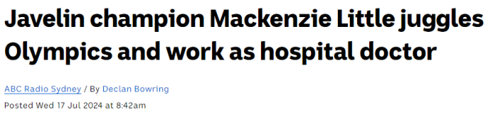
图片来源：abc news比如说参加了标枪的澳洲奥运选手Mackenzie Little，她除了是专业运动员外，本身也是一位杰出的医生。
2023年，她也获得了世锦赛女子标枪的铜牌，也是这一次奥运会的标枪金牌有利竞争者。
再看看她的日常生活，她每天只训练2小时时间，其余时间都在正常工作，工作地点是悉尼Royal North Shore Hospital。
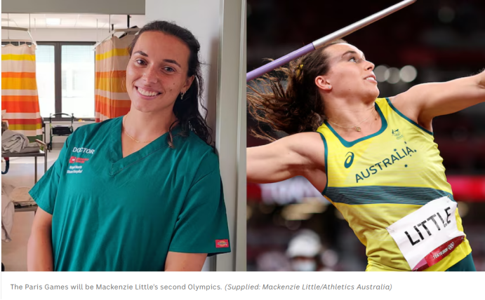
图片来源：abc news因为全职医生的工作，她每天的训练时间段并不固定，要么在上班之前要么在下班之后，雷打不动的是，每天至少会联系2小时。
纵观她的人生，她很早之前就展现出了在标枪项目上的强烈天赋。
美国出生澳洲长大的她，一直都坚持着标枪训练，高中毕业后她因为成绩优异直接被斯坦福大学录取，大学毕业以后又回到悉尼大学继续攻读医学博士学位。
2023年顺利毕业以后，她进入医院全职工作。
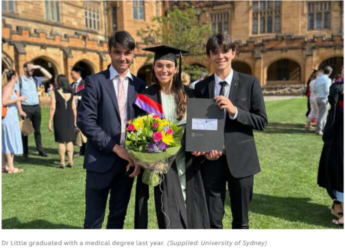
图片来源：abc news#02：
澳洲的奥运选手
真实身份竟然是这样
除了医生之外，澳洲的奥运选手主业其实都并非是运动员。比如说之前获得了奥运会铜牌的跳水运动员Robert Newbery，退役后做了医生。
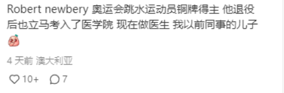
图片来源：小红书澳洲本届羽毛球选手，本职是一名护士，因为参加奥运会，医院特意给了她一个月的特殊annual leave。
图片来源：小红书
社交媒体上也有专门的报道，还专门为她加油打气！
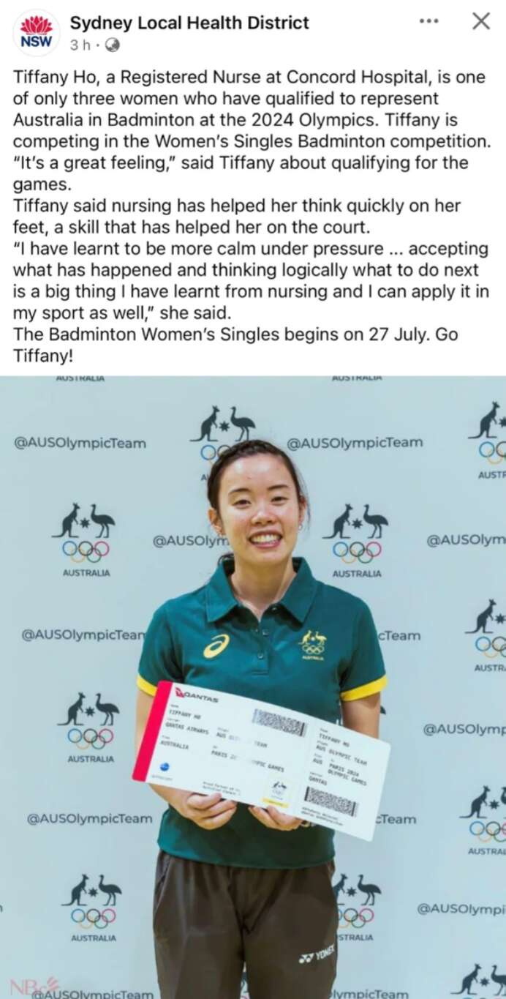
图片来源：小红书还有一位参加了本次奥运会的澳洲运动员Stephanie Ratcliffe，6岁的时候就换上糖尿病，病魔却没有阻止她对运动的热爱和追求。上高中开始，她一边在学校附近的Boost Juice果汁店打工，一边坚持训练。
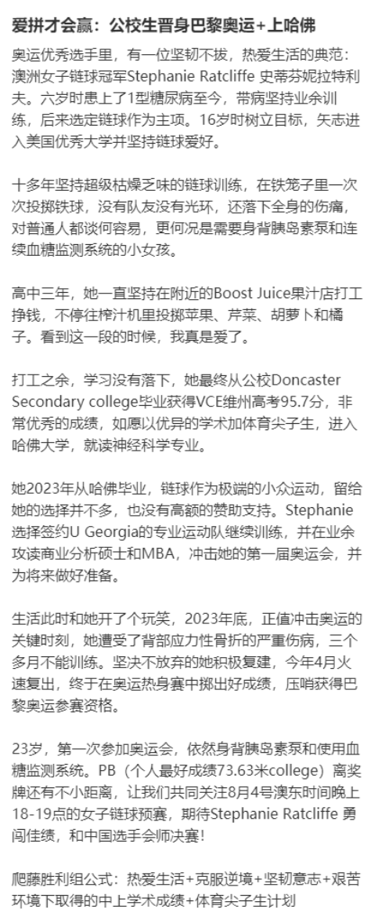
图片来源：小红书高中毕业后，以优异的成绩被哈佛大学直接录取，就读的是神经科学专业。
经历了重重磨难后，终于站上了今年奥运的舞台，希望她能够得到一个不错的成绩。
还有网友表示，澳洲羽毛球队的教练本职是学校的体育老师，为了备战奥运特意请了年假。
图片来源：小红书
除了学校体育老师、护士、医生之外，澳洲参加过奥运会的运动员们，还有很多种身份。
打乒乓的数学老师
参加了东京奥运会的29岁的乒乓球选手David Powell，实际上主业是一名老师。
他任职于墨尔本顶级私校Haileybury，是一名8年级的数学老师。
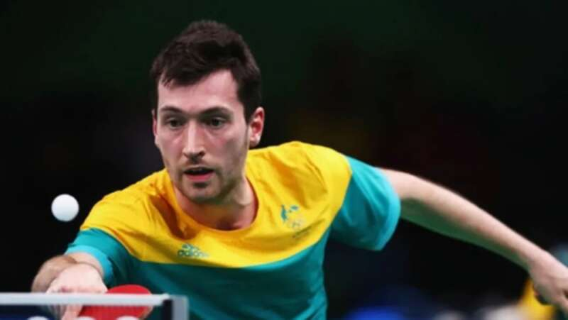
图片来源：Herald Sun在得知David Powell要代表澳洲参加运动会之后，Haileybury的官方账号还在Facebook上为他送上了祝福，希望他能够在东京奥运会上取得佳绩。
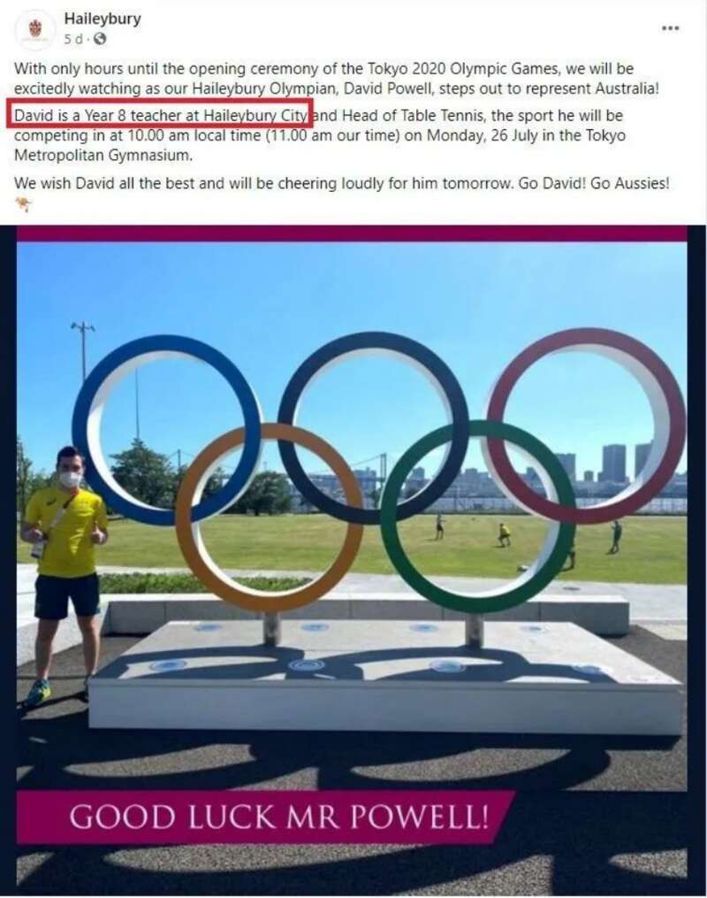
一边给孩子们上课，一边还能去奥运会上比个赛，不知道学校的体育老师知道了之后是什么样的心情。
事实上，东京奥运会也不是Powell第一次参加奥运会。早在2016年，他就已经出现在了里约奥运会的赛场上。
从十几岁开始，他就开始参加乒乓球比赛，他的身影也常常出现在澳洲以及世界的各大赛事上。
射箭的健身器材店老板
参加东京奥运会射箭比赛的David BarnesIt实际上是一家健身器材公司的老板。
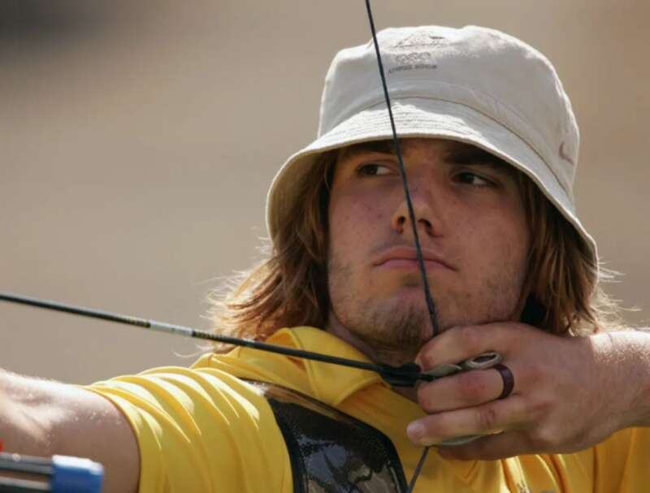
2004年，年仅18岁的他代表澳洲参加了雅典奥运会，并展现出了射箭天赋。
然而就在三年后，在各项比赛中斩获了金牌的他，可能是感受到了“王者的孤独”，决定退出“射箭界”，回归到正常生活。
在之后平静的日子里，BarnesIt找到了心仪的另一半并有了两个可爱的孩子，还开了一家健身器材店。
但射箭始终是他心中的热爱，于是在10年之后的2017年，他决定复出。通过刻苦的训练，他也如愿站在了东京奥运会的赛场上。
划船的咨询师
澳洲的女子四人单浆项目在这次的东京奥运会上拿下冠军，顺利斩获奖牌。而划船的四名姑娘中，还有一名来自四大会计事务所的咨询师。
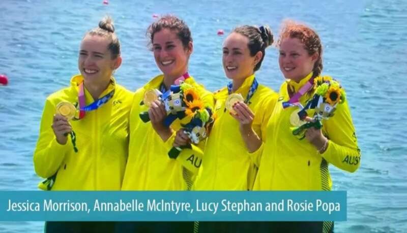
这名名叫Jessica Morrison的运动员，本职工作实际上是在永安会计事务工作了3年的一名咨询师，去参加比赛之前还刚刚获得了职务的晋升。
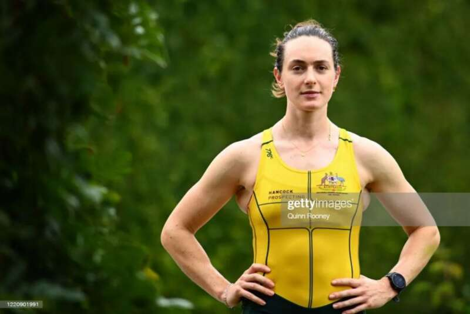
参加了8人赛艇项目的Tim Masters，同样也是永安事务所的咨询师。
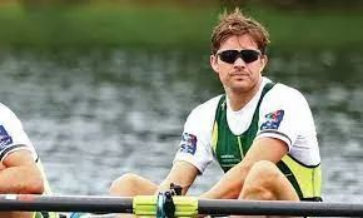
怎么说呢…真的是既可咨询，亦可赛艇。全都是牛人啊！
在澳洲奥运会的参赛队伍中，还有很多像他们这样的运动员。
退休之后依旧活跃在奥运会马术赛场上的澳洲奶奶Mary Hanna，凭着66岁的年龄成为了赛场上最年长的选手。
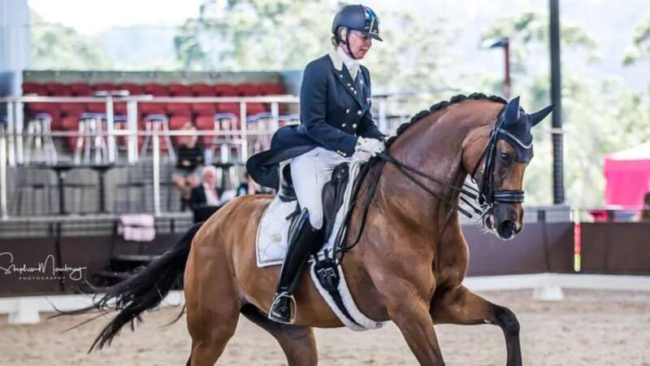
48岁高龄杀入女单32强，替澳出征奥运的华人乒乓球选手。
曾6次出征奥运，就住在墨尔本著名的华人区Box Hill。
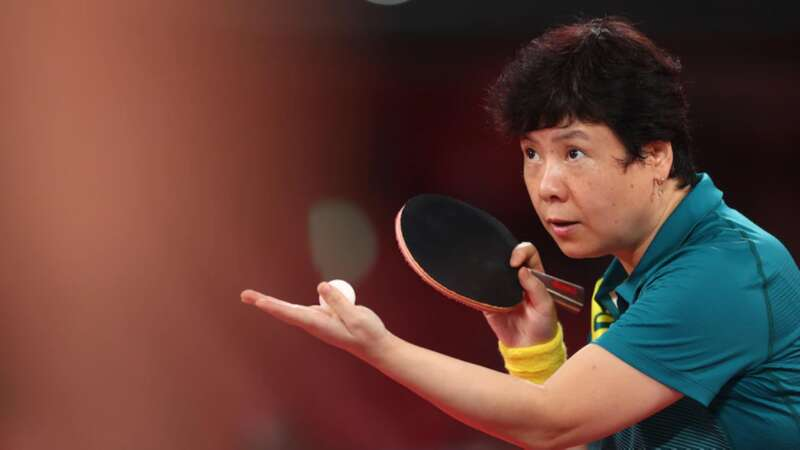
（图片来源：ABC News）还真的是奥运选手随时就可能出现在身边，奥运精神也从来不会因为年龄受到限制。
#03：
赛场下回归本职工作，
澳人的运动热情融入生活
这些运动员们，或许没有真正意义上受过专业的训练，凭借着一腔的热爱和刻苦，最终成功地站在了奥运会的赛场上。
不管成绩如何，是否取得奖牌，从奥运赛场上回来之后，他们又会变回“普通人”，回到自己原本的工作岗位上。
不过在澳洲生活久了就能了解，澳洲人真的是把运动融入在生活之中。
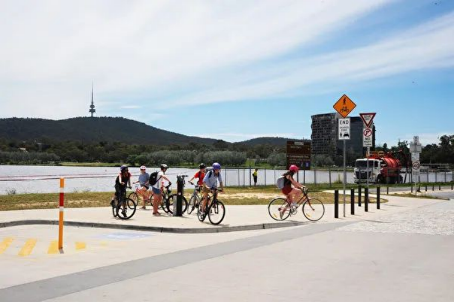
澳洲人是出了名的崇尚运动，澳洲的自然气候条件更是赋予了澳洲人得天独厚的户外运动条件。
在澳洲，最普及的运动有：跑步，游泳，网球，高尔夫球。板球、自行车、足球、冲浪、帆船和沙滩排球更是上榜澳洲人喜爱的运动。
在运动这件事情上，澳洲人可以说是从娃娃开始培养。
不仅澳洲父母十分重视幼儿户外活动，澳洲的学校在假期还会展开一系列与运动有关的主题项目，例如足球、网球、橄榄球等等。
除了各种体育俱乐部，各个学校也会组建自己的校队，甚至还有校际联赛。在澳洲的教育中，体育绝对是重要的组成部分。
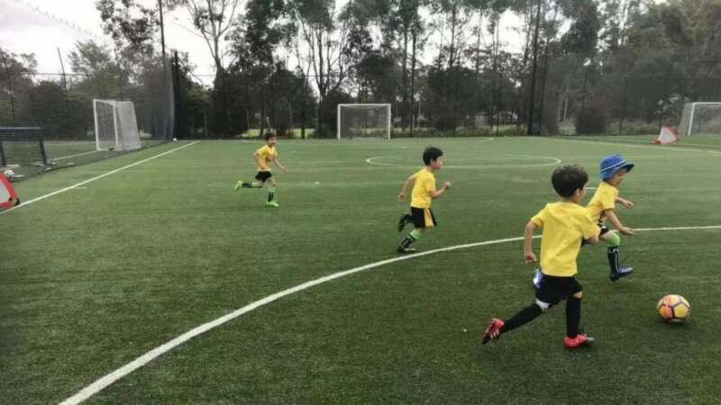
街边随处可见的滑板少年，公园健身的老人，足球场上飞奔的孩子们，更别说常常的海岸线给水上运动爱好者们提供了完美的天然运动场。
所以即使是“散兵”，也能在奥运会这样最高规格的国际赛事上取得不俗的成绩，一点也不会令人惊讶。
最后
澳洲的奥运选手们除了参赛的时候就有其他全职工作，还有人在退役后当了警察、当了大学教授。
体育可能是他们的热爱，在热爱之后，他们也有属于自己的生活，只是在工作生活的同时，他们也没有忘记这份梦想，或许就是在这样热烈的坚持下，他们才能站上奥运的领奖台吧！